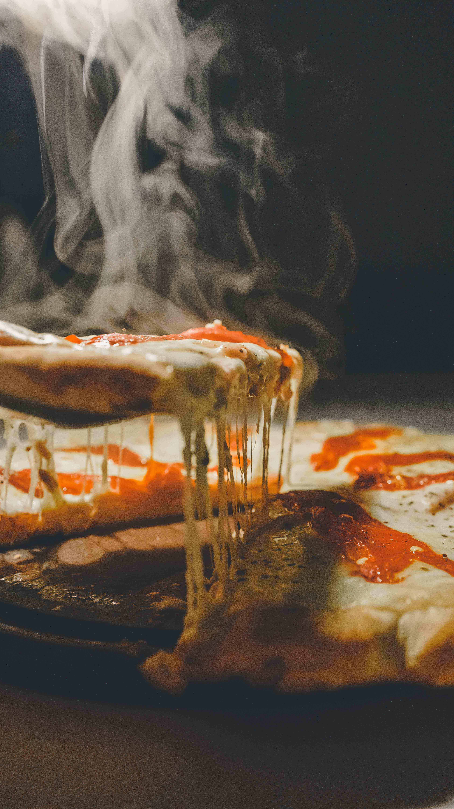
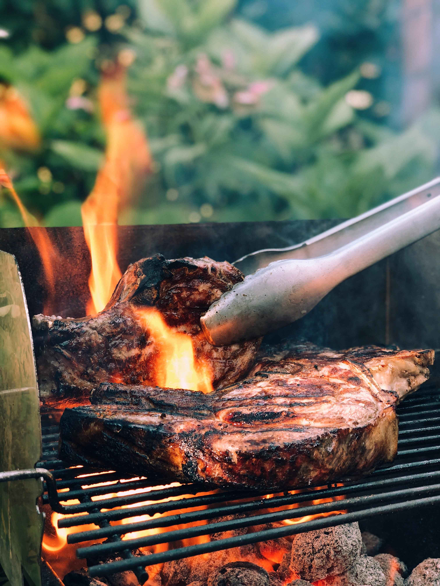
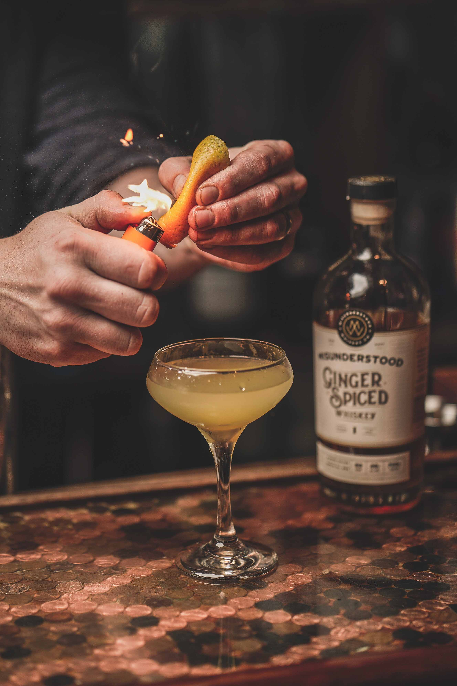
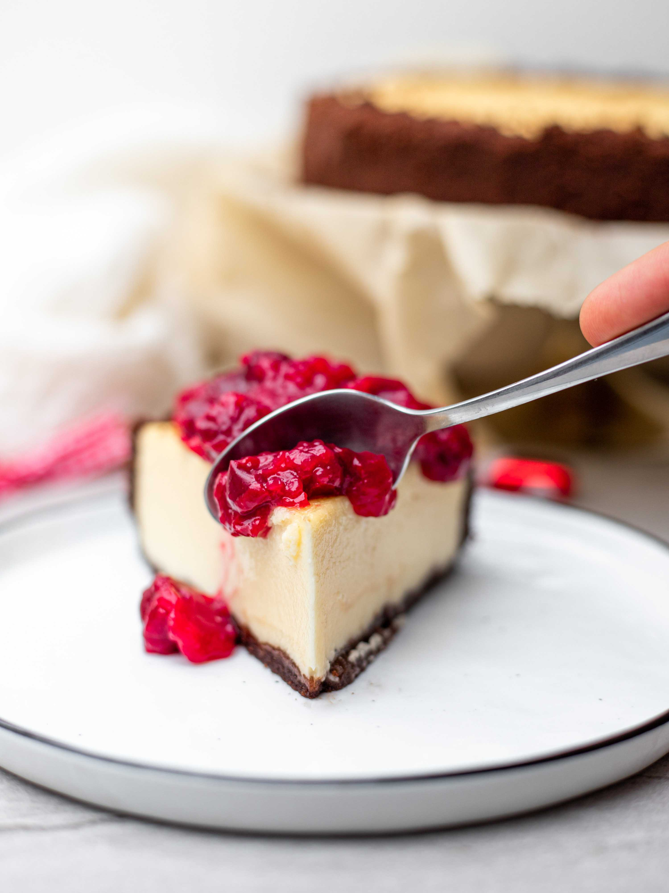
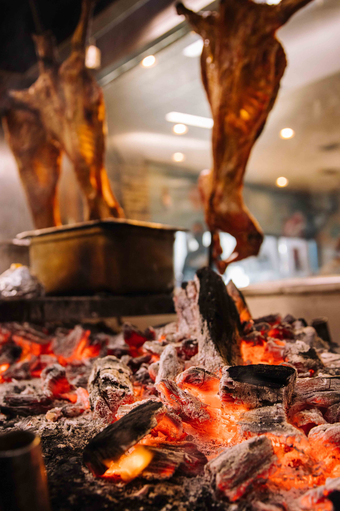

Galeria

-- Pizza --
Maira Basan
Tipo de cocción: Horno tradicional
Arroyo Ceibal, Santa Fe, Argentina

-- Costeleta de cerdo --
Matias Frugoni
Tipo de cocción: Parilla
Tanti, Cordoba, Argentina

-- Mix de carnes y verduras --
Alberto Voegeli
Tipo de cocción: Horno de barro
Westquartier, Suiza

-- Gin tonic --
Candela Vildoza
Bartender
Potenza, Italia

-- Cheesecake --
Mariel Batistuta
Tipo de cocción: cocina tradicional
Madrid, España

-- Cabrito --
Alejo Romani
Tipo de cocción: Estaca
Florianopolis, Brasil
Se parte de nuestra comunidad:
Envíanos un mail a email@email.com.ar con las imágenes de tu plato y contamos sobre la receta incluyendo algún tips, si está dentro de la seleccionada la compartimos con la comunidad en esta sección